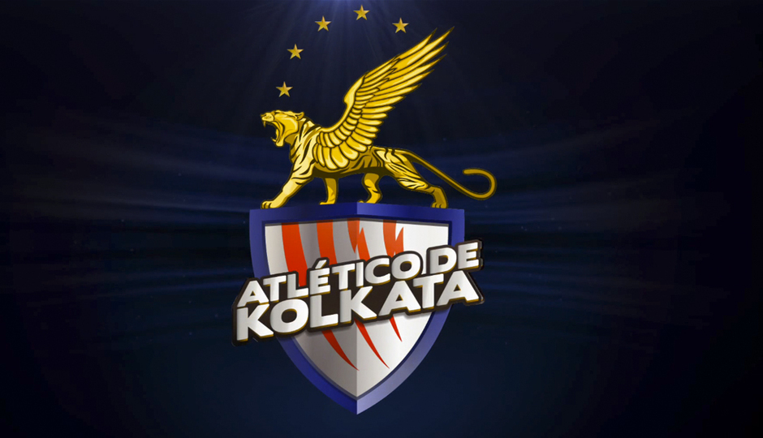

Team Players, Coach & Owners in Indian Super League
Atletico de Kolkata Squad Indian players: Subhasish Roy Chowdhury; Arnab Mondal, Biswajit Saha, Denzil Franco, Nallappan Mohanraj, Kingshuk Debnath; Climax Lawrence, Lester Fernandez, Sanju Pradhan, Rakesh Masih, Cavin Lobo; Mohammed Rafique, Mohammed Rafi, Baljit Sahni.
Foreign players: Apoula Edel, Basillo Agudo; Jose Miguel, Sylvain Monsoreau, Jakub Podany, Jofre Gonzalez, Borja Fernandez, Luis Garcia (marquee signing); Arnal Llibert, Fikru Teferra Lemessa. |  |
NorthEast United FC Squad
Indian players: Kunzang Bhutia, Rehenesh TP; Jibon Singh, Aiborlang Khongjee, Pritam Kumar Singh, Robin Gurung; David Nghaite, Redeem Tlang, Alen Deory, Milan Singh, Boithang Haokip, Zodingliana Ralte; Durga Boro, Seimenlen Doungel. |
Delhi Dynamos Squad
Indian players: Jagroop Singh; Anwar Ali, Govin Singh, Munmun Lugun, Shouvik Ghosh, Naoba Singh, Robert Lalthlamuana; Francis Fernandes, Shylo Maltswamtluanga, Souvik Chakraborthy, Adil Khan, Manish Bhargav, Steven Dias; Manandeep Singh. |
FC Pune City Squad
Indian Players: Lalit Thapa, Arindam Bhattacharya; Dharmaraj Ravanan, Pritam Kotal, Deepak Devrani, Anupam Sarkar; Mehrajuddin Wadoo, Pratik Shinde, Tapan Maity, Israil Gurung, Manish Maithani, Lenny Rodrigues; Ashutosh Mehta, Joaquim Abranches |
Chennaiyin FC Squad
Indian players: Abhjit Mondal, Shilton Paul; Dhanachandra Singh, Gouramangi Singh, Khelemba Meetei, Abhishek Das; Jaison Vales, NP Pradeep, Dane Pereira, Anthony Barbosa, Denson Devadas, Harmanjot Khabra; Jeje Lalpekhlua, Jayesh Rane. |  |
Kerala Blasters Squad
Indian players: Luis Barreto, Sandip Nandy; Avinabo Bag, Gurwinder Singh, Nirmal Chettri, Ramandeep Singh, Sandesh Jhingan, Saumik Dey; Mehtab Hussain, Ishfaq Ahmed, Sushanth Mathew, Renedy Singh, Godwin Franco; Milagres Gonsalves, CS Sabeeth. |
FC Goa Squad
Indian players: Laxmikanth Kattimani; Debabatra Roy, Narayan Das, Prabir Das, Rowilson Rodriguez; Clifford Miranda, Shaikh Jewel Raja, Alwyn George, Mandar Rao Desai, Romeo Fernandes, Peter Carvalho, Pronay Halder; Holicharan Narzary, Gabriel Fernandes. |
Mumbai City FC Squad
Indian Players: Subrata Paul, Ishan Debnath; Peter Costa, Deepak Mondal, Raju Gaekwad, Syed Rahim Nabi; Lalrindika Ralte, Ram Malik, Rohit Mirza, Asif Kottayil; Sushil Kumar Singh, Lalrin Fela, Nadong Bhutia, Singam Subash Singh |


©:2018-19 www.ourwebsite.com